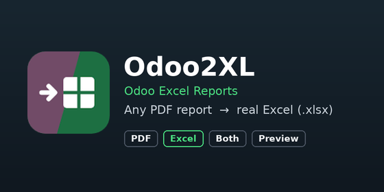

Adds Excel export to the Odoo Print flow. Any PDF report can be exported, and the result is a real spreadsheet - not a picture of the PDF.
Odoo2XL also comes as a free extension for Chrome, Edge and Firefox. It does the same conversion in the browser, with nothing installed on the server: handy on Odoo Online, or where you cannot add modules. Use either the extension or this module, not both.
| This module | Browser extension | |
|---|---|---|
| Installed | Once, on the Odoo server | In the browser of each user |
| Who gets Excel | Every user of the database | The users who add the extension |
| Odoo versions | The version of this module | 15 and newer |
| Odoo Online | No: Odoo Online does not allow custom modules | Yes |
| Your data | Stays on your Odoo server | Stays between your browser and your Odoo |
xlsx report action on the same model, for example from report_xlsx) do not get the chooser, so you never get two Excel versions of one report.om_excel_reports.ask_format to 0 (printing then always gives the PDF).xlsxwriter and lxml (both shipped with Odoo).Odoo Mates - odoomates@gmail.com
Contributor: Akshay Manoj
Odoo2XL is not affiliated with or endorsed by Odoo S.A.